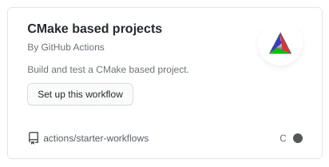

Esercitazione 7
Calcolo numerico per la generazione di immagini fotorealistiche
Maurizio Tomasi maurizio.tomasi@unimi.it
CI builds
CI builds
Nel momento in cui si gestiscono pull request, è necessario essere sicuri che la modifica non peggiori il codice.
Un requisito basilare è che tutti i test continuino a passare una volta che viene incorporato il pull request.
GitHub consente di verificare automaticamente questo requisito, tramite i Continuous Integration builds.
Continuous Integration (CI)
È un termine che indica un metodo di lavoro in cui miglioramenti e modifiche al codice vengono incorporate il prima possibile nel branch
master.Perché possano essere incorporati, occorre essere certi della loro qualità!
Un CI build consiste nel creare una macchina virtuale su cui si installa un sistema operativo «pulito» e su cui si installa il codice, lo si compila e si eseguono i test.
Al termine dell’esecuzione dei test, la macchina virtuale viene cancellata; se si esegue di nuovo il CI build, si ricomincia da capo.
Vantaggi dei CI build
Installano il codice su una macchina virtuale: più difficile combinare guai.
La macchina virtuale viene creata sempre da zero: più facile scoprire quali sono le dipendenze del codice. (Esempio: è stata installato il compilatore C++? È stata installata la libreria
libgd?)Si possono creare macchine virtuali che installano diversi sistemi operativi (Linux, Windows, Mac OS X, FreeBSD, etc.): il codice viene verificato su ciascuna di esse.
I CI builds possono venire eseguiti automaticamente da GitHub ogni volta che si apre un pull request, ogni volta che si fa un commit, etc.
CI builds in GitHub
Un CI build può essere creato ed eseguito in GitHub tramite GitHub Actions, un servizio che include una serie di possibilità che vanno oltre i semplici CI build.
Per attivare un CI build è sufficiente create una directory nascosta
.github/workflowsnel proprio repository, che contenga un file di testo in formato YAML, che contenga queste informazioni:- Quando eseguire l’azione (a ogni pull request? a ogni commit?)
- Quale sistema operativo usare (Linux? Windows? quale versione?)
- Quali pacchetti aggiuntivi installare (compilatore C++? Python?)
- Come compilare il codice ed eseguire i test?
Il «Marketplace»
GitHub Actions ha un «marketplace» che consente di configurare automaticamente con pochi click del mouse un CI build in funzione del linguaggio che usate.
Sono disponibili azioni pre-configurate per molti linguaggi ed ambienti di sviluppo.
Non è drammatico se non trovate un’azione che fa al caso vostro: è abbastanza semplice creare nuove azioni su misura, una volta che capite come fare a descriverle.


Matrici e trasformazioni
Trasformazioni
Oggi implementeremo il tipo
Transformation, che codifica una trasformazione.Noi considereremo solo traslazioni, rotazioni attorno ai tre assi coordinati e trasformazioni di scala: questo ci semplificherà molto il lavoro!
Le trasformazioni possono essere applicate a tre oggetti matematici:
- Punti (oggetti di tipo
Point); - Vettori (oggetti di tipo
Vec); - Normali (lo vedremo oggi!).
- Punti (oggetti di tipo
Il tipo Transformation
Vedremo nelle prossime lezioni che è spesso necessario avere a portata di mano sia la matrice M (che implementa la trasformazione) che la sua inversa M^{-1}.
Il nostro tipo
Transformationdovrà quindi tenere in memoria entrambe le matrici:class Transformation: def __init__(self, m=IDENTITY_MATR4x4, invm=IDENTITY_MATR4x4): self.m = m self.invm = invmdove
IDENTITY_MATR4x4è la matrice identità di dimensioni 4×4.
Consistenza
Ovviamente, il fatto che dobbiamo passare sia M che M^{-1} pone un problema di consistenza! Come facciamo a sapere che i due parametri del costruttore siano corretti?
Implementiamo un metodo che verifica che il prodotto delle due matrici dia la matrice identità 4×4:
def is_consistent(self): prod = _matr_prod(self.m, self.invm) return _are_matr_close(prod, IDENTITY_MATR4x4)dove
_matr_prode_are_matr_closesono semplici metodi che operano su matrici 4×4.
Trasformazioni standard
Definiamo una serie di funzioni che costruiscono oggetti
Transformationpreoccupandosi di passare i valori giusti per M e M^{-1}.Ad esempio, questa è l’implementazione di
translation(traslazione per un vettore \vec v):
Inversa
Vedremo che è spesso necessario accedere anche all’inversa di una trasformazione.
Fortunatamente, dato che manteniamo in memoria sia M che M^{-1}, questo compito è molto facile:
Prodotti
È particolarmente critico implementare le funzioni per applicare una trasformazione a un oggetto geometrico.!
Settimana scorsa abbiamo implementato
PointeVec; dobbiamo ora implementare gli operatori di prodotto su questi oggetti:Transformation * Transformation → Transformation; nel calcolareinvm, ricordate che (AB)^{-1} = B^{-1}A^{-1}.Transformation * Point → Point.Transformation * Vec → Vec.
È conveniente anche implementare un tipo
Normal, perché la trasformazione di una normale è delicata: \hat n' = \bigl(M^{-1}\bigr)^t \hat n.
Punti e vettori
La differenza tra punti e vettori sta nell’ultimo coefficiente della rappresentazione:
P = \begin{pmatrix} p_x\\ p_y\\ p_z\\ 1 \end{pmatrix}, \vec v = \begin{pmatrix} v_x\\ v_y\\ v_z\\ 0 \end{pmatrix}.
Dal punto di vista del codice, è meglio implementare due funzioni distinte per il prodotto: quella relativa ai vettori può risparmiare di iterare sull’ultima colonna delle matrici M e M^{-1}.
Trasformazione di un punto
row0, row1, row2, row3 = self.m
newp = Point(x=p.x * row0[0] + p.y * row0[1] + p.z * row0[2] + row0[3],
y=p.x * row1[0] + p.y * row1[1] + p.z * row1[2] + row1[3],
z=p.x * row2[0] + p.y * row2[1] + p.z * row2[2] + row2[3])
w = p.x * row3[0] + p.y * row3[1] + p.z * row3[2] + row3[3]
if w == 1.0:
return newp # Avoid three (potentially costly) divisions if not needed
else:
return Point(newp.x / w, newp.y / w, newp.z / w)Normalizzazione
Nel caso in cui l’ultimo coefficiente del risultato non sia uguale a 1, è necessario normalizzare gli altri termini:
\begin{pmatrix} p_x\\ p_y\\ p_z\\ \lambda \end{pmatrix} \rightarrow \begin{pmatrix} p_x / \lambda\\ p_y / \lambda\\ p_z / \lambda\\ 1 \end{pmatrix}
Non spiegheremo il motivo di tale normalizzazione; ci limitiamo ad assumere che sia giusta.
Normali
Implementiamo anche un semplice tipo
Normal, che ha struttura identica aVecma che per il momento non richiede tutti i metodi (somma, prodotto scalare, etc.):Una trasformazione applicata a una normale è identica all’applicazione di un vettore, ma bisogna usare la trasposta dell’inversa. Vediamo come si fa il calcolo.
Inversa trasposta
La matrice omogenea M può essere rappresentata a blocchi:
M = \begin{pmatrix} \textcolor{#3434AD}{A}& \textcolor{#34AD34}{\vec v}\\ \mathbf{0}& 1, \end{pmatrix}
dove \textcolor{#3434AD}{A} è una matrice 3×3.
Si può dimostrare facilmente che l’inversa di una matrice omogenea è ancora una matrice omogenea.
Inversa trasposta
La trasposta di una matrice omogenea non è però più omogenea, perché compaiono valori non nulli nell’ultima riga:
M^t = \begin{pmatrix} \textcolor{#3434AD}{m_{11}}& \textcolor{#3434AD}{m_{21}}& \textcolor{#3434AD}{m_{31}}& 0\\ \textcolor{#3434AD}{m_{12}}& \textcolor{#3434AD}{m_{22}}& \textcolor{#3434AD}{m_{32}}& 0\\ \textcolor{#3434AD}{m_{13}}& \textcolor{#3434AD}{m_{23}}& \textcolor{#3434AD}{m_{33}}& 0\\ \textcolor{#34AD34}{v_1}& \textcolor{#34AD34}{v_2}& \textcolor{#34AD34}{v_3}& 1\\ \end{pmatrix}.
Esplicitando il prodotto tra l’inversa trasposta e un vettore, si vede che l’ultimo coefficiente (omogeneo) non è più 0!
Questo però non influisce su \hat n', e possiamo quindi ignorare il problema.
Implementazione
Il codice di pytracer implementa il prodotto tra matrice e normale nel modo più diretto possibile:
È inutile infatti costruire la matrice trasposta di
self.invme calcolare il prodotto di questa con la normale.
Guida per l’esercitazione
Transformation
Continuate a lavorare nella pull request
geometry.Implementate un semplice tipo
Normal.Implementate il tipo
Transformation, che possa essere costruito da una matrice 4×4 e dalla sua inversa. (Fatelo agile comeVec,Point, etc.)Implementate le seguenti operazioni:
- Metodo
is_closeo funzioneare_closeperTransformation; - Prodotto con
Transformation,Vec,PointeNormal; - Inversa;
- Funzioni
translation,scaling, e le tre rotazioni attorno a x, y e z.
- Metodo
Test
Fate riferimento al file test_all.py di pytracer per vedere come sono implementati i test.
Preoccupatevi di verificare che tutti i test passino: le operazioni in
Transformationsono fondamentali per il codice che scriveremo le prossime volte, e non devono esserci errori.Una volta che avete implementato tutte le funzionalità e tutti i test passano, fate il merge del pull request.
Workflow in GitHub
Aggiungete un workflow al vostro repository GitHub.
Ci sono molti template disponibili in GitHub: scegliete il più appropriato.
Il workflow deve eseguire le seguenti azioni:
- Scaricare il codice dal repository GitHub (verifica che non manchino file);
- Compilare il codice (verifica che non ci siano errori di sintassi);
- Eseguire i test (verifica che il codice funzioni a dovere).
Modificate un test in modo che fallisca e verificate che quando fate il commit ciò vi venga segnalato. (Poi rimettete a posto il test).
Indicazioni per il C++
GitHub Actions
Una volta salvato il codice in un repository su GitHub, configurate una nuova «Action» (v. video seguente).
Il modello è «CMake based projects» (ignorate il fatto che sembri supportare solo il linguaggio C):

Esecuzione dei test
Modificate uno dei test che sono già implementati nel vostro codice, in modo che fallisca:
- Cambiate il codice del test e modificate il valore atteso per un test;
- Andate nella directory
builded eseguitectest, verificando il fallimento; - Fate il commit delle modifiche;
- Inviate le modifiche a GitHub col comando
git push.
Cosa succede al CI build? Fallisce come vi aspettavate?
Suggerimenti
- Se il build non fallisce, è probabilmente perché viene usato come tipo di build il
Releaseanziché ilDebug, e avete usatoassertnel vostro codice. - Soluzioni:
- Cambiate il file
.ymlin modo da usareDebuganzichéRelease - Usate
#undef NDEBUGprima di#include <cassert>(meglio!) - Definite una vostra funzione
my_assert(ancora meglio!) - Usate una libreria di testing C++, come Catch2 (ottimo!)
- Cambiate il file
- Insegnamento: provare sempre a far fallire uno o più test quando si configura un CI build!
Indicazioni per C#
GitHub Actions
Aggiungete una Action al repository GitHub, una volta che avete fatto il commit ed eseguito
git push.Il modello è «.NET» (evitate il modello «.NET desktop», a noi serve quello per i programmi che funzionano da linea di comando):


Indicazioni per Julia
GitHub Actions
- A differenza del C++ e del C#, Julia non ha una action preconfigurata nel sito.
- Ma GitHub gestisce un «marketplace», e il team Julia l’ha usato per fornire alla comunità una serie di actions.
- Le azioni che servono sono le seguenti:
julia-actions/setup-julia@v1(installa Julia);actions/cache@v1(evita di reinstallare pacchetti Julia ogni volta)julia-actions/julia-buildpkg@latest(compila il package)julia-actions/julia-runtest@latest(esegue i test)
File UnitTests.yml
name: Unit tests
on:
push:
branches:
- master
jobs:
test:
name: Julia ${{ matrix.julia-version }} - ${{ matrix.os }} - ${{ matrix.arch }}
runs-on: ${{ matrix.os }}
strategy:
matrix:
julia-version:
- '1.5'
os:
- ubuntu-latest
arch:
- x64
steps:
- uses: actions/checkout@v2
- name: "Set up Julia"
uses: julia-actions/setup-julia@v1
with:
version: ${{ matrix.julia-version }}
arch: ${{ matrix.arch }}
- name: "Cache artifacts"
uses: actions/cache@v1
env:
cache-name: cache-artifacts
with:
path: ~/.julia/artifacts
key: ${{ runner.os }}-test-${{ env.cache-name }}-${{ hashFiles('**/Project.toml') }}
restore-keys: |
${{ runner.os }}-test-${{ env.cache-name }}-
${{ runner.os }}-test-
${{ runner.os }}-
- name: "Build package"
uses: julia-actions/julia-buildpkg@latest
- name: "Run unit tests"
uses: julia-actions/julia-runtest@latestIndicazioni per Kotlin
GitHub Actions
Selezionate «Java with Gradle»:

Gradle scaricherà automaticamente il supporto Kotlin.
Il processo proverà a compilare il codice e a eseguire tutti i test nel repository

Risoluzione dei problemi
Ricordatevi di aggiungere al commit i file in
gradle/wrapper/Se avete problemi a causa della versione di Gradle, rigenerate
gradlewda linea di comando così:(Gradle supporta Kotlin a partire dalla versione 5.3).